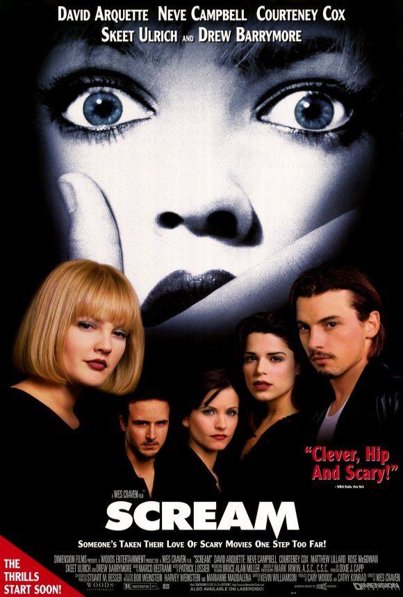

Scream
Scream es una saga que actualmente cuenta con 6 películas.
La película sigue a un grupo de adolescentes que son perseguidos por un asesino enmascarado conocido como Ghostface. Al contrario que en otras películas de terror en la que los personajes son típicamente estúpidos y toman las peores decisiones, los personajes de Scream son inteligentes y saben muy bien a qué se están enfrentando.
1996 - 1hs 51min
¿Dónde Ver?
Actualmente, esta película está disponible en las plataformas: